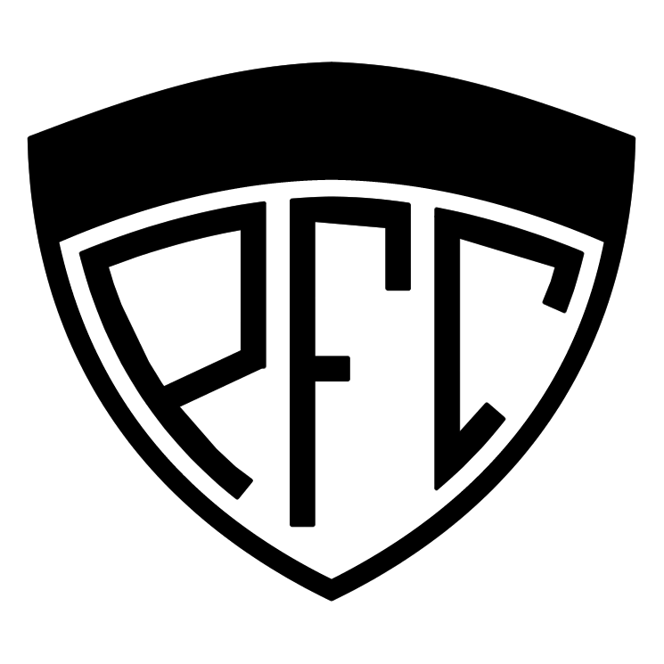
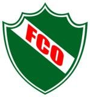

CAYCA
Pico F.C.
Independiente
Costa Brava
Ferro C.O.
Clubes de General PicoExplora los clubes más importantes de la ciudad |
| Inicio | Club Atlético y Cultural Argentino | Pico Fútbol Club | Sportivo Independiente | Costa Brava | Ferro Carril Oeste |
General Pico, ubicada en la provincia de La Pampa, es una ciudad conocida por su pasión por el deporte. Entre sus clubes más destacados se encuentran el Club Atlético y Cultural Argentino, Pico Fútbol Club, Sportivo Independiente, Costa Brava, y Ferro Carril Oeste.
Explora cada uno de estos clubes y conoce su historia, sus instalaciones, y sus logros deportivos.
|
CAYCA |
 Pico F.C. |
Independiente |
Costa Brava |
 Ferro C.O. |
| © 2024 Clubes de General Pico. Todos los derechos reservados. |